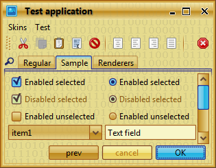
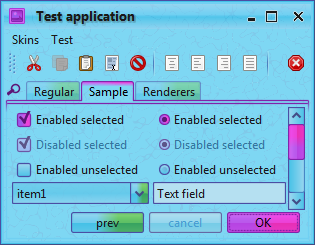
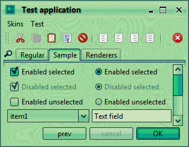
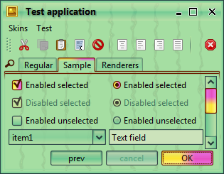
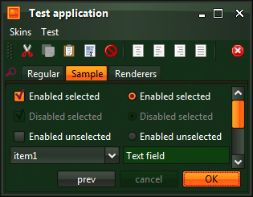

Click on the button below to launch the main Substance WebStart application (signed).
The test application in this link uses the extras pack. Clicking on the "Skins" menu will show the available core and extra skins.
Here are a few screenshots of various Substance Extras skins. Click on each image to see how to use the corresponding skin.
    